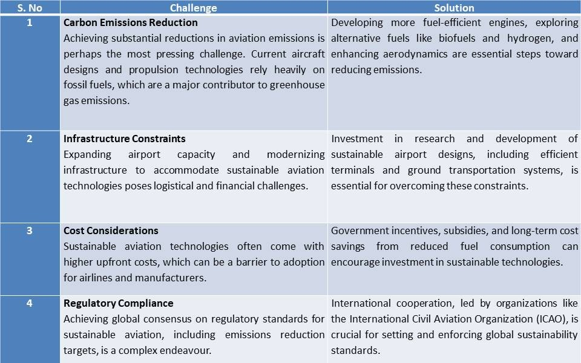

Phase 1&2 Information
Conclusion and Bibliography
Document downloader
FLIGHT TO THE FUTURE:
MAPPING THE SUSTAINABLE SKIES IN SOUTH AFRICAN AVIATION
Welcome to the future of aviation—where sustainability meets flight. Inspired by pioneers like Amelia Earhart, we're ushering in a new era. From electric dreams to nature-powered jets, aviation is on a transformative journey towards a greener tomorrow. Join us as we explore cutting-edge technologies driving this eco-conscious evolution.
Why Green Jobs in Aviation?
The aviation industry is a critical driver of global connectivity and economic growth. However, it also contributes significantly to greenhouse gas emissions and environmental degradation. To address these challenges, the industry is embracing green jobs—roles that focus on reducing environmental impact through innovative practices and sustainable technologies.
Benefits of the implementation of green jobs in the aviation industry in South Africa:
- Environmental Sustainability
- Economic Growth and Job Creation
- Innovation and Technological Advancement
- Compliance with Regulatory Standards
- Long-term Viability of the Industry
 Figure 1. Image showing sustainable fuel being loaded into Boeing 737
Figure 1. Image showing sustainable fuel being loaded into Boeing 737
Jobs to be implemented in South Africa, with relation to green jobs
| Green Job |
Description |
| Sustainable Aviation Fuel Specialist: |
Develops and oversees production of eco-friendly aviation fuels from renewable sources. |
| Aircraft Engineer specializing in Green Technologies: |
Designs energy-efficient aircraft systems to reduce emissions and enhance sustainability. |
| Environmental Compliance Officer: |
Ensures aviation operations comply with environmental regulations and manages impact assessments. |
| Aviation Sustainability Manager: |
Develops and implements sustainability strategies to reduce environmental impact and promote green practices. |
Learn More by viewing the Phase 1&2 Webpage
 Figure 2. Image showing airlines fueld by SAF flying to South Africa
Figure 2. Image showing airlines fueld by SAF flying to South Africa
Challenges Implementing Green Jobs in Aviation in South Africa
- High Initial investment costs.
- Limited Availability of Sustainable Resources.
- Workforce Training.
- Environmental Challenges.

Figure 3. Challenges and solutions
Who is the intended audience?
The target audience for this report includes policymakers, government agencies, aviation industry professionals, environmental organizations, academic researchers, students, and individuals interested in pursuing careers aligned with environmental sustainability within the aviation sector in South Africa.
Epilogue:
Through the development of 4IR and technology, the focus of my investigation will be to assess why pursuing a green job in the aviation industry in South Africa is a promising endeavor compared to other sectors in transport concerning environmental sustainability. I aim to explore the specific initiatives, technologies, and policies within the South African aviation industry that promote environmental sustainability and make it an attractive option for individuals seeking green careers. The purpose is to provide insights into the potential opportunities and challenges associated with pursuing green jobs in the South African aviation sector and to offer recommendations for individuals interested in this field.
Fasten your seatbelts, because the journey to greener skies is about to take off!